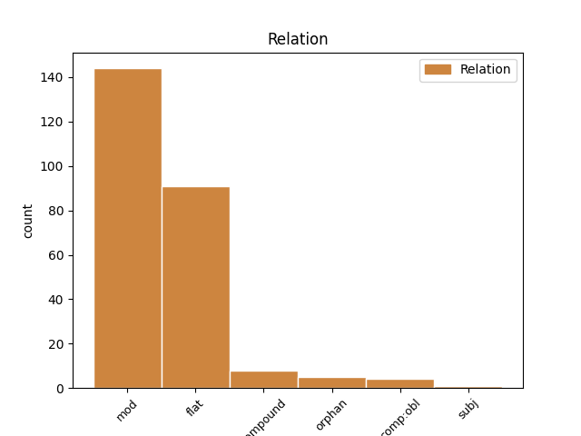
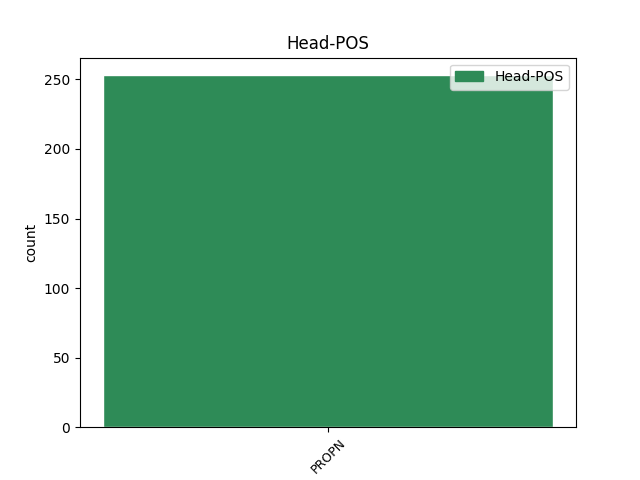
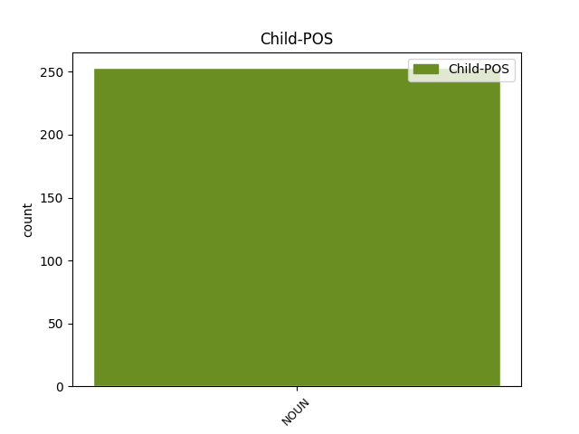

Distribution of features within this leaf



Agreement Rules sorted by frequency.
- When the dependent token is the modifer(mod) of the head token, and the head token is PROPN and the dependent token is NOUN.
1 De _ _ _ _ 0 _ _ _
2 acum _ _ _ _ 0 _ _ _
3 înainte _ _ _ _ 0 _ _ _
4 în _ _ _ _ 0 _ _ _
5 cărțile _ _ _ _ 0 _ _ _
6 de _ _ _ _ 0 _ _ _
7 hotărnicii _ _ _ _ 0 _ _ _
8 , _ _ _ _ 0 _ _ _
9 și _ _ _ _ 0 _ _ _
10 în _ _ _ _ 0 _ _ _
11 zapisele _ _ _ _ 0 _ _ _
12 de _ _ _ _ 0 _ _ _
13 vînzarea _ _ _ _ 0 _ _ _
14 moșiilor _ _ _ _ 0 _ _ _
15 , _ _ _ _ 0 _ _ _
16 să _ _ _ _ 0 _ _ _
17 să _ _ _ _ 0 _ _ _
18 scrie _ _ _ _ 0 _ _ _
19 stînjănul _ _ _ _ 0 _ _ _
20 lui _ _ _ _ 0 _ _ _
21 Şărban Șerban PROPN Npmsrn Case=Acc,Nom|Definite=Ind|Gender=Masc|Number=Sing 0 _ _ _
22 Vodă vodă NOUN Ncmsrn Case=Acc,Nom|Definite=Ind|Gender=Masc|Number=Sing 21 mod _ ref=PART_II_CAP_3.9|SpaceAfter=No
23 . _ _ _ _ 0 _ _ _
1 La _ _ _ _ 0 _ _ _
2 lacul _ _ _ _ 0 _ _ _
3 cu _ _ _ _ 0 _ _ _
4 lapte _ _ _ _ 0 _ _ _
5 dulce _ _ _ _ 0 _ _ _
6 , _ _ _ _ 0 _ _ _
7 Unde _ _ _ _ 0 _ _ _
8 pe _ _ _ _ 0 _ _ _
9 toţi _ _ _ _ 0 _ _ _
10 doru _ _ _ _ 0 _ _ _
11 -i _ _ _ _ 0 _ _ _
12 duce _ _ _ _ 0 _ _ _
13 , _ _ _ _ 0 _ _ _
14 Cu _ _ _ _ 0 _ _ _
15 ţărmuri _ _ _ _ 0 _ _ _
16 de _ _ _ _ 0 _ _ _
17 pită _ _ _ _ 0 _ _ _
18 albă _ _ _ _ 0 _ _ _
19 , _ _ _ _ 0 _ _ _
20 Unde _ _ _ _ 0 _ _ _
21 ciutele _ _ _ _ 0 _ _ _
22 s- _ _ _ _ 0 _ _ _
23 adapă _ _ _ _ 0 _ _ _
24 Şi _ _ _ _ 0 _ _ _
25 -ncă _ _ _ _ 0 _ _ _
26 zînele _ _ _ _ 0 _ _ _
27 se _ _ _ _ 0 _ _ _
28 scaldă _ _ _ _ 0 _ _ _
29 , _ _ _ _ 0 _ _ _
30 Propoartă _ _ _ _ 0 _ _ _
31 -se _ _ _ _ 0 _ _ _
32 , _ _ _ _ 0 _ _ _
33 Umblă _ _ _ _ 0 _ _ _
34 -se _ _ _ _ 0 _ _ _
35 Micul _ _ _ _ 0 _ _ _
36 Dălea Delea PROPN Npmsry Case=Acc,Nom|Definite=Def|Gender=Masc|Number=Sing 0 _ _ _
37 Dămean Damian NOUN Ncmsrn Case=Acc,Nom|Definite=Ind|Gender=Masc|Number=Sing 36 flat _ SpaceAfter=No
38 , _ _ _ _ 0 _ _ _
39 Prunc _ _ _ _ 0 _ _ _
40 de _ _ _ _ 0 _ _ _
41 doisprezece _ _ _ _ 0 _ _ _
42 ani _ _ _ _ 0 _ _ _
43 , _ _ _ _ 0 _ _ _
44 Trage _ _ _ _ 0 _ _ _
45 -și _ _ _ _ 0 _ _ _
46 murgul _ _ _ _ 0 _ _ _
47 după _ _ _ _ 0 _ _ _
48 el _ _ _ _ 0 _ _ _
49 , _ _ _ _ 0 _ _ _
50 Murg _ _ _ _ 0 _ _ _
51 frumos _ _ _ _ 0 _ _ _
52 și _ _ _ _ 0 _ _ _
53 subţirel _ _ _ _ 0 _ _ _
54 . _ _ _ _ 0 _ _ _
1 Ce _ _ _ _ 0 _ _ _
2 încă _ _ _ _ 0 _ _ _
3 împrotivă _ _ _ _ 0 _ _ _
4 , _ _ _ _ 0 _ _ _
5 văzînd _ _ _ _ 0 _ _ _
6 că _ _ _ _ 0 _ _ _
7 e _ _ _ _ 0 _ _ _
8 încrezută _ _ _ _ 0 _ _ _
9 mie _ _ _ _ 0 _ _ _
10 Evangheliia _ _ _ _ 0 _ _ _
11 a _ _ _ _ 0 _ _ _
12 netăerii _ _ _ _ 0 _ _ _
13 , _ _ _ _ 0 _ _ _
14 cum _ _ _ _ 0 _ _ _
15 și _ _ _ _ 0 _ _ _
16 lui _ _ _ _ 0 _ _ _
17 Pătru Petru PROPN Npmsrn Case=Acc,Nom|Definite=Ind|Gender=Masc|Number=Sing 0 _ _ _
18 , _ _ _ _ 0 _ _ _
19 tăiarea tăiere NOUN Ncfsry Case=Acc,Nom|Definite=Def|Gender=Fem|Number=Sing 17 orphan _ ref=PAVEL_GALAT_2.7
20 împregiur _ _ _ _ 0 _ _ _
21 . _ _ _ _ 0 _ _ _
1 Ce _ _ _ _ 0 _ _ _
2 zic _ _ _ _ 0 _ _ _
3 că _ _ _ _ 0 _ _ _
4 păgînii păgân NOUN Ncmpry Case=Acc,Nom|Definite=Def|Gender=Masc|Number=Plur 9 subj _ ref=PAVEL_1.CORINT_10.20
5 ce _ _ _ _ 0 _ _ _
6 jărtvescu _ _ _ _ 0 _ _ _
7 , _ _ _ _ 0 _ _ _
8 dracului _ _ _ _ 0 _ _ _
9 jărtvescu jertfi PROPN Npmsry Case=Acc,Nom|Definite=Def|Gender=Masc|Number=Sing 0 _ _ _
10 , _ _ _ _ 0 _ _ _
11 iară _ _ _ _ 0 _ _ _
12 nu _ _ _ _ 0 _ _ _
13 lui _ _ _ _ 0 _ _ _
14 Dumnezău _ _ _ _ 0 _ _ _
15 , _ _ _ _ 0 _ _ _
16 iară _ _ _ _ 0 _ _ _
17 nu _ _ _ _ 0 _ _ _
18 voiu _ _ _ _ 0 _ _ _
19 să _ _ _ _ 0 _ _ _
20 fiți _ _ _ _ 0 _ _ _
21 voi _ _ _ _ 0 _ _ _
22 partnici _ _ _ _ 0 _ _ _
23 dracilor _ _ _ _ 0 _ _ _
24 . _ _ _ _ 0 _ _ _
1 Iară _ _ _ _ 0 _ _ _
2 voiu _ _ _ _ 0 _ _ _
3 să _ _ _ _ 0 _ _ _
4 știți _ _ _ _ 0 _ _ _
5 voi _ _ _ _ 0 _ _ _
6 , _ _ _ _ 0 _ _ _
7 că _ _ _ _ 0 _ _ _
8 a _ _ _ _ 0 _ _ _
9 tot _ _ _ _ 0 _ _ _
10 bărbatul bărbat NOUN Ncmsry Case=Acc,Nom|Definite=Def|Gender=Masc|Number=Sing 15 comp:obl _ ref=PAVEL_1.CORINT_11.3|SpaceAfter=No
11 , _ _ _ _ 0 _ _ _
12 cap _ _ _ _ 0 _ _ _
13 îi _ _ _ _ 0 _ _ _
14 iaste _ _ _ _ 0 _ _ _
15 Hristos Hristos PROPN Npmsrn Case=Acc,Nom|Definite=Ind|Gender=Masc|Number=Sing 0 _ _ _
16 , _ _ _ _ 0 _ _ _
17 iară _ _ _ _ 0 _ _ _
18 capul _ _ _ _ 0 _ _ _
19 muerii _ _ _ _ 0 _ _ _
20 iaste _ _ _ _ 0 _ _ _
21 bărbatul _ _ _ _ 0 _ _ _
22 , _ _ _ _ 0 _ _ _
23 iară _ _ _ _ 0 _ _ _
24 capul _ _ _ _ 0 _ _ _
25 lui _ _ _ _ 0 _ _ _
26 Hristos _ _ _ _ 0 _ _ _
27 iaste _ _ _ _ 0 _ _ _
28 Dumnezău _ _ _ _ 0 _ _ _
29 . _ _ _ _ 0 _ _ _
Disagree Examples:
1 Nu _ _ _ _ 0 _ _ _
2 iaste _ _ _ _ 0 _ _ _
3 Dumnedzău _ _ _ _ 0 _ _ _
4 Dumnedzăul Dumnezeu PROPN Npmsry Case=Acc,Nom|Definite=Def|Gender=Masc|Number=Sing 0 _ _ _
5 morților mort NOUN Ncmpoy Case=Dat,Gen|Definite=Def|Gender=Masc|Number=Plur 4 mod _ ref=MARC12.27|SpaceAfter=No
6 , _ _ _ _ 0 _ _ _
7 ce _ _ _ _ 0 _ _ _
8 al _ _ _ _ 0 _ _ _
9 viilor _ _ _ _ 0 _ _ _
10 , _ _ _ _ 0 _ _ _
11 dară _ _ _ _ 0 _ _ _
12 voi _ _ _ _ 0 _ _ _
13 mult _ _ _ _ 0 _ _ _
14 rătăciți _ _ _ _ 0 _ _ _
15 . _ _ _ _ 0 _ _ _
1 PREDOSLOVIA _ _ _ _ 0 _ _ _
2 A _ _ _ _ 0 _ _ _
3 LUCĂI Luca PROPN Npmsoy Case=Dat,Gen|Definite=Def|Gender=Masc|Number=Sing 0 _ _ _
4 EVANGHELISTUL Evanghelist NOUN Ncmsry Case=Acc,Nom|Definite=Def|Gender=Masc|Number=Sing 3 flat _ ref=LUCA.Predoslovie.title|SpaceAfter=No
5 . _ _ _ _ 0 _ _ _
1 Și _ _ _ _ 0 _ _ _
2 era _ _ _ _ 0 _ _ _
3 zis _ _ _ _ 0 _ _ _
4 lui _ _ _ _ 0 _ _ _
5 de _ _ _ _ 0 _ _ _
6 la _ _ _ _ 0 _ _ _
7 Dumnezău _ _ _ _ 0 _ _ _
8 , _ _ _ _ 0 _ _ _
9 pren _ _ _ _ 0 _ _ _
10 Duhul _ _ _ _ 0 _ _ _
11 Sfînt _ _ _ _ 0 _ _ _
12 , _ _ _ _ 0 _ _ _
13 că _ _ _ _ 0 _ _ _
14 el _ _ _ _ 0 _ _ _
15 nu _ _ _ _ 0 _ _ _
16 va _ _ _ _ 0 _ _ _
17 vedea _ _ _ _ 0 _ _ _
18 moartea _ _ _ _ 0 _ _ _
19 , _ _ _ _ 0 _ _ _
20 pînă _ _ _ _ 0 _ _ _
21 nu _ _ _ _ 0 _ _ _
22 va _ _ _ _ 0 _ _ _
23 vedea _ _ _ _ 0 _ _ _
24 pre _ _ _ _ 0 _ _ _
25 Hristosul Hristos PROPN Npmsry Case=Acc,Nom|Definite=Def|Gender=Masc|Number=Sing 0 _ _ _
26 Domnului domn NOUN Ncmsoy Case=Dat,Gen|Definite=Def|Gender=Masc|Number=Sing 25 mod _ ref=LUCA2.26|SpaceAfter=No
27 . _ _ _ _ 0 _ _ _
1 Iară _ _ _ _ 0 _ _ _
2 Iisus _ _ _ _ 0 _ _ _
3 înceape _ _ _ _ 0 _ _ _
4 a _ _ _ _ 0 _ _ _
5 fi _ _ _ _ 0 _ _ _
6 ca _ _ _ _ 0 _ _ _
7 de _ _ _ _ 0 _ _ _
8 treizeci _ _ _ _ 0 _ _ _
9 de _ _ _ _ 0 _ _ _
10 ani _ _ _ _ 0 _ _ _
11 ( _ _ _ _ 0 _ _ _
12 cum _ _ _ _ 0 _ _ _
13 să _ _ _ _ 0 _ _ _
14 părea _ _ _ _ 0 _ _ _
15 lor _ _ _ _ 0 _ _ _
16 ) _ _ _ _ 0 _ _ _
17 fiiul _ _ _ _ 0 _ _ _
18 lui _ _ _ _ 0 _ _ _
19 Iosif Iosif PROPN Npmsrn Case=Acc,Nom|Definite=Ind|Gender=Masc|Number=Sing 0 _ _ _
20 , _ _ _ _ 0 _ _ _
21 a _ _ _ _ 0 _ _ _
22 fiiului fiu NOUN Ncmsoy Case=Dat,Gen|Definite=Def|Gender=Masc|Number=Sing 19 mod _ ref=LUCA3.23
23 lui _ _ _ _ 0 _ _ _
24 Elie _ _ _ _ 0 _ _ _
25 . _ _ _ _ 0 _ _ _
1 Atunci _ _ _ _ 0 _ _ _
2 deaderă _ _ _ _ 0 _ _ _
3 lui _ _ _ _ 0 _ _ _
4 cartea _ _ _ _ 0 _ _ _
5 Isaiei Isaiia PROPN Npmsoy Case=Dat,Gen|Definite=Def|Gender=Masc|Number=Sing 0 _ _ _
6 prorocul proroc NOUN Ncmsry Case=Acc,Nom|Definite=Def|Gender=Masc|Number=Sing 5 mod _ ref=LUCA4.17
7 și _ _ _ _ 0 _ _ _
8 deșchizînd _ _ _ _ 0 _ _ _
9 cartea _ _ _ _ 0 _ _ _
10 , _ _ _ _ 0 _ _ _
11 află _ _ _ _ 0 _ _ _
12 locul _ _ _ _ 0 _ _ _
13 unde _ _ _ _ 0 _ _ _
14 era _ _ _ _ 0 _ _ _
15 scris _ _ _ _ 0 _ _ _
16 : _ _ _ _ 0 _ _ _